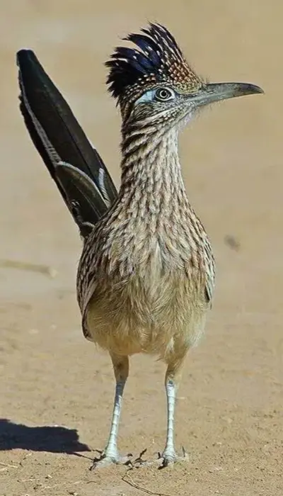

New Mexico

Data
Area: 121,591 sq mi
Population: 2,130,256
Capital: Santa Fe
Languages: English, Spanish
Currency: USD
Time Zone: UTC-7
Calling Code: +1
Internet TLD: .us
Weather
Temperature: 49ºf
Conditions: Sunny
Wind: 9.5 mph